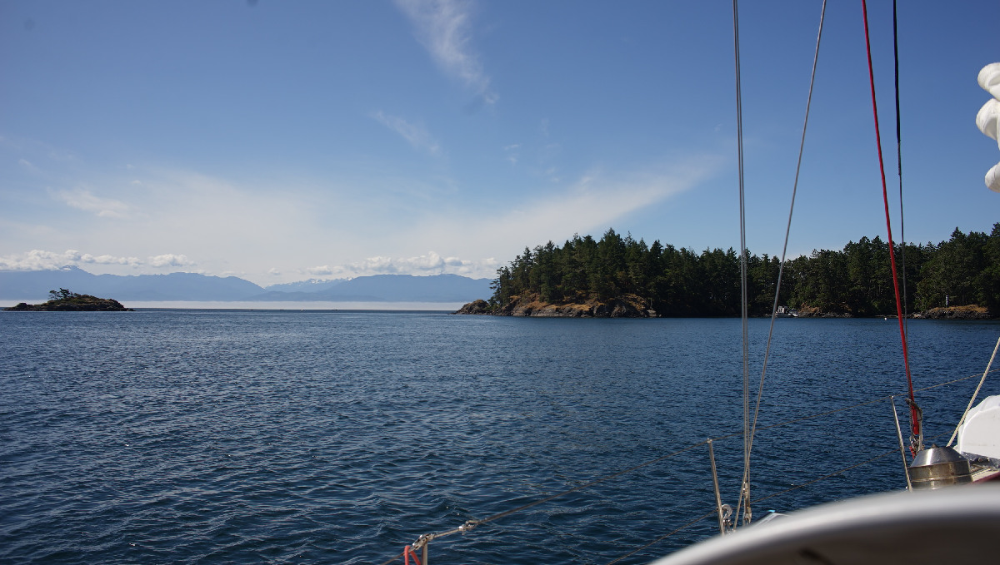

juan de fuca strait
The Juan de Fuca Strait is a long channel that divides Canadian waters from US waters. A busy shipping channel snakes along the middle, with boats heading west taking the northmost lane. Despite the presence of a shipping channel, there is plenty of room to sail and maneuver around. There is a lot of water moving through the strait, timing movements with current is important, especially around Race Rocks and Sooke, although the current still runs strongly almost all the way to Port San Juan.
We have sailed through the Juan de Fuca Strait a few times, east and west. We gathered notes on several anchorages that we've stopped at on this page.
See also more detailed posts: Victoria, Cadboro Bay, and Port San Juan(Port Renfrew).
To view all of stops, see Summer 2024 route
Becher Bay
On July 4th on a calm morning at 0500, we left Cadboro Bay and made our way into Juan de Fuca Strait. 3 Canadian navy ships were patrolling the shore, doing back and forths from Esquimalt to Williamshead. At that point we had considered dropping the anchor in Quarantine Cove, but we instead decided to push on and snuck past a fog-engulfed Race Rocks. We went to anchor in Becher Bay just before a 30-35 knot westerly wind was supposed to start. We anchored east of Wolf Island in 13 ft(max of 16 ft HW), although we anchored a bit too close to the gap between the island and the Vancouver Island shore. The bay was calm when we arrived, but when the wind picked up it came funneling out of the gap, accelerated as it contours the top of Wolf Island. There was no one else anchored here, and no crab pots, so we have plenty of room to add scope to weather the passing gale. The ground had very good holding in mud, we set our anchor alarm and never once dragged, even when the wind whistled higher than 35 knots. The motion aboard was a bit distressing, it was difficult to sleep, but the boat was safe. Anchoring just a bit more south of the gap in the lee of Wolf Island seems like a very well-protected spot, although the waters are in the 30 ft range there, and it is not possible to tuck in close to the island because of a submarine cable. In all, this is a very good and safe spot, provided that you add enough scope. Anchoring here gives you a very clear idea of conditions out in the Strait, we could see the sea state from the cockpit through our binoculars.
We anchored here again on the way back, more in the lee of Wolf Island this time, but it wasn't a very comfortable stay. There was a lot of swell coming in, making for a very rolly night (we hardly slept). The wind wasn't strong, and the current in the bay kept us sideways to it. Honestly, this is really not an ideal stop... not if you expect to rest.